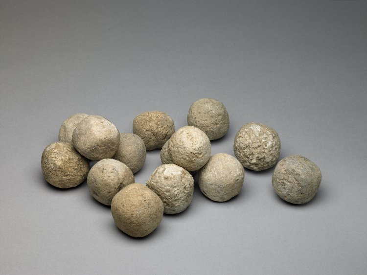
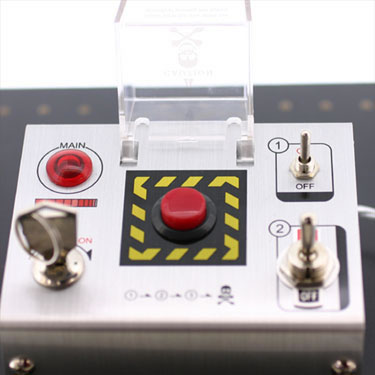
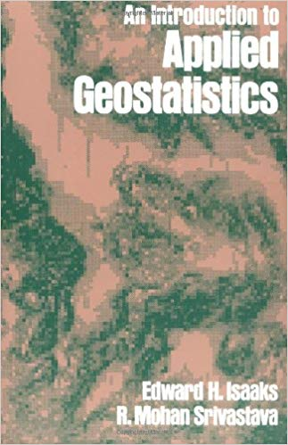

class: center, middle, inverse # Creating better GIS professionals Víctor Olaya --- class: center, middle <img src="./toolbox.png" width="50%"/> --- class: center, middle <img src="./libro_peso.jpg" width="50%"/> --- class: center, middle # "Your software is awesome, but it's useless without data" -Schuyler Erle- --- class: center, middle <img src="./david-and-goliath.jpg" width="100%"/> --- class: center, middle --- class: center, middle  --- class: center, middle --- class: center, middle #"Your software and data are awesome, but they are useless without knowledge" --- class: center, middle # Let's make software less easy to use --- class: center, middle # Easiness is not a substitute for knowledge --- class: center, middle # "Programming today is a race between software engineers striving to build bigger and better idiot-proof programs, and the Universe trying to produce bigger and better idiots. So far, the Universe is winning." -Rick Cook- --- class: center, middle # ¿User friendly? --- class: center, middle # The goal is not to create a software that satisfies the user. # (Do not make the user develop false beliefs) --- class: center, middle # The goal is to create a software that generates satisfying results. --- class: center, middle # I don't care about happy users. I care about sound results. --- class: center, middle <img src="./wizard.png" width="100%"/> --- class: center, middle # UI/UX --- class: center, middle <img src="./boton.jpg" width="100%"/> --- class: center, middle  --- class: center, middle # "Your software and your data are awesome, but they are dangerous without knowledge" --- class: center, middle # "The three most dangerous things in the world are a programmer with a soldering iron, a hardware type with a program patch and a user with an idea." -Rick Cook- --- class: center, middle # The client is not always right --- class: center, middle # Let's write less documentation --- class: center, middle # Documentation explains the software. --- # Slope algorithm ## Inputs: ### Elevation: Values must be in the same units as the layer cellsize. Cells are assumed to be square (N-S cellsize is the same as E-W cellsize) ## Outputs: ### Slope: In degrees --- # Kriging algorithm ## Inputs: ### Input points: ??? ### Layer field to use: ??? ### Range: ??? ### Nugget: ??? ### Sill: ??? --- class: center, middle <img src="./kriginghelp.png" width="100%"/> --- class: center, middle  --- class: center, middle # Let's not help so much in mailing lists/forums. --- class: center, middle # Software mailing lists/forums are about software. --- class: center, middle # Beware of gamification. --- class: center, middle # Users <i>vs</i> Professionals --- class: center, middle # Me <i>vs</i> The others --- class: center, middle, inverse # Thanks! ## Víctor Olaya ## volayaf@gmail.com